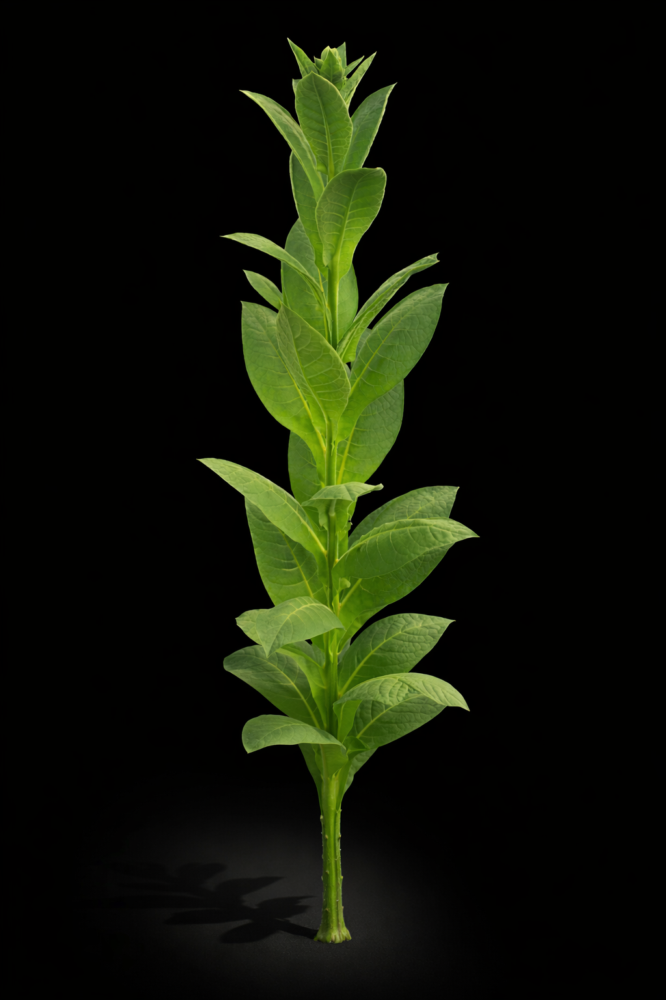
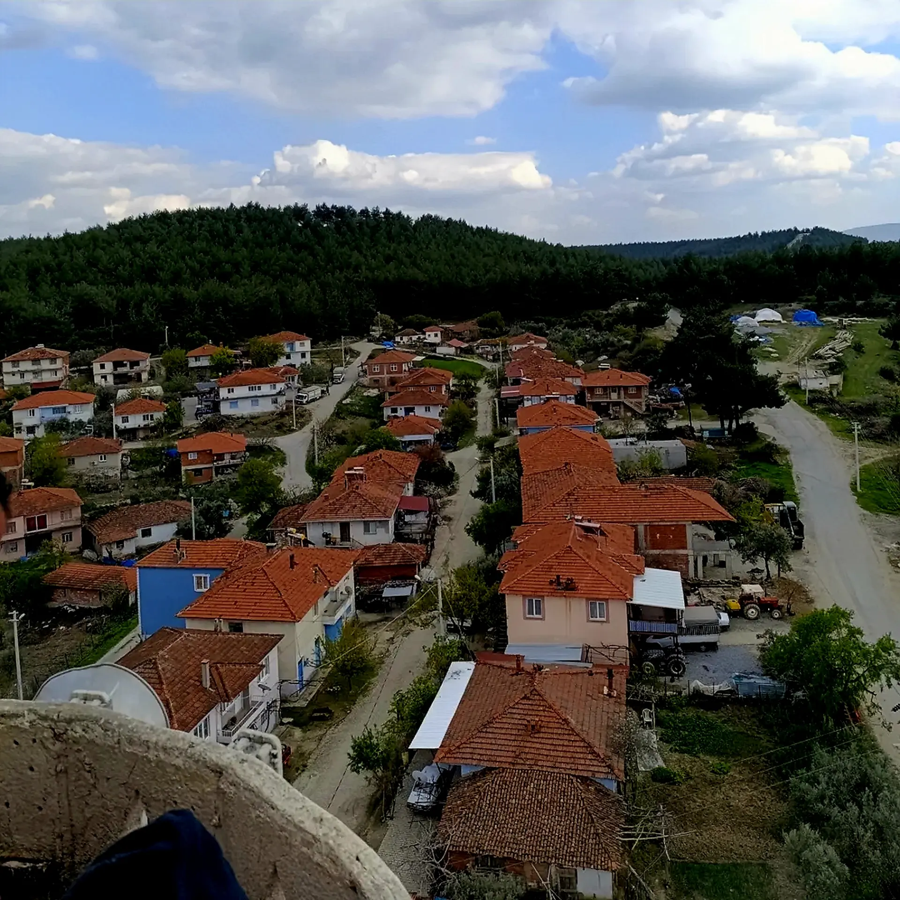

Köyümüzde tarım, uzun yıllar boyunca temel geçim kaynağı olmuştur. 2000’li yıllara kadar köy ekonomisi büyük ölçüde tütün üretimine dayanmaktaydı. Tütün, hem üretim miktarı hem de ekonomik katkısı açısınsdan köy halkının en önemli gelir kaynağıydı. 2000’li yıllardan sonra ise tarımsal faaliyetlerde önemli değişimler yaşanmıştır.

Bu dönemde bir süre haşhaş üretimi yapılmış, ardından zeytin yetiştiriciliği ön plana çıkmaya başlssamıştır. Özellikle zeytin, bölgeye uygun yapısı sayesinde köyde yaygınlaşan önemli bir ürün haline gelmiştir. Son yıllarda ise açılan sondaj kuyuları ile birlikte sulu tarıma geçiş hız kazanmıştır.
FOTOĞRAF ARŞİVİ


